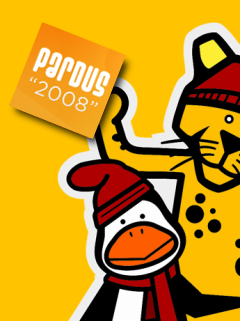

Pardus 2008... pek yakında...
Pardus 2008, yenilenmiş araçları, daha çok donanım desteği, daha iyi performans ile çok yakında indirilmeye hazır olacak.
Otomatik yazıcı tanıma, gelişmiş yetkilendirme sistemi, çift ekranla çalışma gibi konularda güçlü olanaklar sunan yeni ekran yöneticisi ve popüler özgür yazılımların en yeni sürümleri Pardus 2008'le birlikte geliyor...
Yol haritası ile gelişmelerin an be an takip edilebildiği sürecin sonuna ilişkin takvim de, geliştirici ekip tarafından açıklandı.
Bu takvime göre test, aday ve kararlı sürüm tarihleri:
3 Haziran Salı : Pardus 2008 Beta
9 Haziran Pazartesi : Pardus 2008 RC1
16 Haziran Pazartesi : Pardus 2008 RC2
23 Haziran Pazartesi : Pardus 2008
Pardus Haberleri
-
14 Mayıs 2008 // Özgürlükiçin topluluğunun çıkardığı E-Dergi, ikinci sayısını yayınladı. E-Dergi'ye buradan ulaşabilirsiniz.
-
9 Mayıs 2008 // 2008 yazında Pardus yaz stajı programına katılacak isimler belli oldu. Bu yaz 21 öğrenci Pardus için çalışacak.
-
1 Mayıs 2008 // Özgürlükİçin topluluğunun desteğiyle hazırlanan LINUXnet'in mayıs sayısı çıktı.
-
24 Nisan 2008 // Google Summer of Code'a kabul edilen Pardus Projesi'nde staj yapacak öğrenciler belli oldu.
-
23 Şubat 2008 // Pardus E-Bülten'i, ilk sayısıyla yayına başladı. Bülten bölümünden ulaşabilirsiniz.

-
Özgürlük için... // Pardus camiasının toplanma noktası belirlendi: ozgurlukicin.com! Acemi Pardus kullanıcıları için ilk adımlar, daha fazla özellik arayanlar için paketler, eğlence meraklılarına oyunlar, haberleşmek için forum, aradığınız herşey...
-
Pardus'u tanıtın... // Pardus'un tanıtımına katkıda bulunmak için Pardus afiş ve düğmelerini sitenizde, blogunuzda yayınlayın, burada...